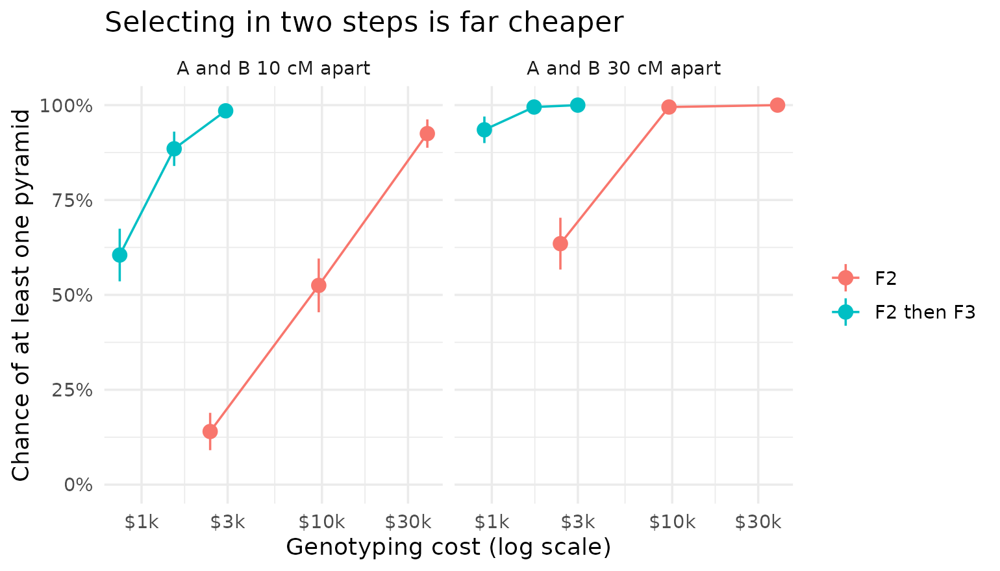

Pyramiding resistance genes with markers
Source:vignettes/articles/gene-pyramiding.Rmd
gene-pyramiding.RmdStacking several resistance genes in one line, pyramiding, makes resistance more durable. For soybean cyst nematode, breeders combine alleles at rhg1 and Rhg4 with other sources. Markers make it possible to see the genes in seedlings, but the planning question remains. How many plants do I need to genotype, and in which generation, to be fairly sure of getting a line homozygous for every gene?
With unlinked genes this has a textbook answer. With linked genes in repulsion, two-stage selection and imperfect markers, it gets messy fast, and a short simulation is the easiest way through. This article also shows that tidyagsim is not tied to any one simulator. Any R function that runs one replicate can be tuned.
The cross
An F1 carries three resistance genes. Gene A comes from one parent
and genes B and C from the other. A and B sit on the same chromosome,
link_cM centimorgans apart, so they start in
repulsion, on opposite chromosomes of the F1. A plant only gets
both on one chromosome through a crossover between them. Each gene is
tracked with a marker marker_cM away from it, so a
crossover between marker and gene can mislead us.
A small simulator in plain R
Each chromosome is a matrix of alleles (1 = resistant or its marker allele), one row per plant and one column per locus, ordered by map position. A gamete copies from one homolog and switches at each interval with the Haldane recombination probability:
haldane <- function(cM) 0.5 * (1 - exp(-2 * cM / 100))
gamete <- function(h1, h2, pos) {
n <- nrow(h1)
r <- haldane(diff(pos))
cross <- cbind(runif(n) < 0.5, matrix(runif(n * length(r)) < rep(r, each = n), n))
from2 <- (t(apply(cross, 1, cumsum)) %% 2) == 1
h1[from2] <- h2[from2] # copy from the second homolog after an odd number of switches
h1
}
# Self each plant in `pop` to make `n` offspring per plant.
self_plants <- function(pop, n, pos) {
idx <- rep(seq_len(nrow(pop$chr1$h1)), each = n)
lapply(setNames(names(pop), names(pop)), function(ch) {
h1 <- pop[[ch]]$h1[idx, , drop = FALSE]
h2 <- pop[[ch]]$h2[idx, , drop = FALSE]
list(h1 = gamete(h1, h2, pos[[ch]]), h2 = gamete(h1, h2, pos[[ch]]))
})
}
genotype <- function(pop, locus) {
ch <- if (locus %in% c("mA", "A", "B", "mB")) "chr1" else "chr2"
pop[[ch]]$h1[, locus] + pop[[ch]]$h2[, locus] # 0, 1 or 2 resistant copies
}One replicate builds the F1, makes F2 plants, selects with markers, and reports whether at least one selected plant is truly homozygous for all three genes. There are two strategies:
-
"F2": genotypen_f2F2 plants and keep those whose markers say homozygous for all three genes. -
"F2 then F3": in the F2 keep up to 5 plants homozygous at A and C that carry at least one B. Self them, genotypen_f3F3 plants from each, and keep the full pyramids.
pyramid <- function(strategy, n_f2, n_f3, link_cM, marker_cM, cost_per_plant, seed) {
pos <- list(chr1 = c(mA = -marker_cM, A = 0, B = link_cM, mB = link_cM + marker_cM),
chr2 = c(mC = -marker_cM, C = 0))
f1 <- list(chr1 = list(h1 = rbind(c(mA = 1, A = 1, B = 0, mB = 0)), h2 = rbind(c(mA = 0, A = 0, B = 1, mB = 1))),
chr2 = list(h1 = rbind(c(mC = 0, C = 0)), h2 = rbind(c(mC = 1, C = 1))))
f2 <- self_plants(f1, n_f2, pos)
hom_all <- function(p, loci) Reduce(`&`, lapply(loci, function(l) genotype(p, l) == 2))
genotyped <- n_f2
if (strategy == "F2") {
chosen <- hom_all(f2, c("mA", "mB", "mC"))
final <- f2
} else {
keep <- which(hom_all(f2, c("mA", "mC")) & genotype(f2, "mB") >= 1)
if (!length(keep)) {
return(list(success = 0, cost = genotyped * cost_per_plant, generations = 2, plants = genotyped))
}
keep <- head(keep, 5)
sub <- lapply(f2, function(ch) list(h1 = ch$h1[keep, , drop = FALSE], h2 = ch$h2[keep, , drop = FALSE]))
final <- self_plants(sub, n_f3, pos)
genotyped <- genotyped + length(keep) * n_f3
chosen <- hom_all(final, c("mA", "mB", "mC"))
}
true_pyramid <- hom_all(final, c("A", "B", "C"))
list(success = as.numeric(any(chosen & true_pyramid)),
cost = genotyped * cost_per_plant,
generations = if (strategy == "F2") 1 else 2, # generations after the F1
plants = genotyped)
}That is all the biology. Now hand it to tidyagsim.
sim_function() turns any function of its settings and a
seed into a spec, and tune() marks what to
choose:
spec <- sim_function(
pyramid,
strategy = tune(), n_f2 = tune(), n_f3 = tune(),
link_cM = 20, marker_cM = 2, cost_per_plant = 6
)
metrics <- sim_metric_set(sim_metric("success", "maximize", label = "Chance of a pyramid"),
cost, generations)Run the study
We compare the one-step strategy at three F2 sizes with the two-step strategy at three F2 sizes, under tight (10 cM) and loose (30 cM) linkage:
grid <- rbind(
data.frame(strategy = "F2", n_f2 = c(400, 1600, 6400), n_f3 = 0),
data.frame(strategy = "F2 then F3", n_f2 = c(100, 200, 400), n_f3 = 20)
)
reps <- sim_replicates(200, seed = 1, scenarios = sim_scenarios(link_cM = c(10, 30)))
res <- tune_grid(spec, reps, grid = grid, metrics = metrics)That is 6 designs × 2 linkage scenarios × 200 replicates.
m <- collect_metrics(res, by_scenario = TRUE, type = "wide")
m$linkage <- ifelse(m$.scenario == "link_cM=10", "A and B 10 cM apart", "A and B 30 cM apart")
ggplot(m, aes(cost, success, colour = strategy)) +
geom_line() +
geom_pointrange(aes(ymin = pmax(success - 2 * success_se, 0), ymax = pmin(success + 2 * success_se, 1))) +
facet_wrap(~linkage) +
scale_x_log10(breaks = c(1000, 3000, 10000, 30000), labels = c("$1k", "$3k", "$10k", "$30k")) +
scale_y_continuous(labels = scales::label_percent(), limits = c(0, 1)) +
labs(x = "Genotyping cost (log scale)", y = "Chance of at least one pyramid",
colour = NULL, title = "Selecting in two steps is far cheaper")
A full pyramid in the F2 needs two recombinant A–B chromosomes plus the right C genotype, so with tight linkage it is very rare: it takes about 6,400 genotyped F2 plants to reach a 90% chance. The two-step strategy only needs one recombinant chromosome in the F2, then fixes it in the F3, so a few hundred plants do the job. It costs an extra generation.
Pick a plan
The cheapest plan with at least a 90% chance of success, for each linkage:
show_best(res, metric = "cost", constraints = list(success = 0.9), scenario = "link_cM=10", n = 1)
#> # A tibble: 1 × 8
#> strategy n_f2 n_f3 .metric mean n std_err .config
#> <chr> <dbl> <dbl> <chr> <dbl> <int> <dbl> <chr>
#> 1 F2 then F3 400 20 cost 2926. 200 9.61 Config006
show_best(res, metric = "cost", constraints = list(success = 0.9), scenario = "link_cM=30", n = 1)
#> # A tibble: 1 × 8
#> strategy n_f2 n_f3 .metric mean n std_err .config
#> <chr> <dbl> <dbl> <chr> <dbl> <int> <dbl> <chr>
#> 1 F2 then F3 100 20 cost 910. 200 12.0 Config004Make it yours
- Put your own map distances in
link_cMandmarker_cM, or run several as scenarios. - Add genes. Extend the position lists and the F1 haplotypes, and the rest of the code follows.
- Change how many F2 plants advance in the two-step strategy, then
make that a
tune()argument too. - To pyramid genes into an elite variety by backcrossing, with
background selection and linkage drag, use
backcross_program(). The backcrossing article shows how. - For pyramiding inside a whole breeding program, with selection on
yield as well, use
alphasim_program(). AlphaSimR’sSP$addSnpChip()andpullSnpGeno()give you markers.